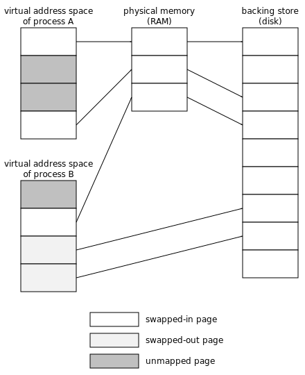

Memory Management Glossary: V¶
A | B | C | D | E | F | G | H | I | J | K | L | M | N | O | P | Q | R | S | T | U | V | W | X | Y | Z
- value object
Also known as
immutable object.
A value object or immutable object is an object whose identity depends solely upon its value or magnitude.
In a typed language, the compiler can often determine at compile time that certain types can be represented as value objects. Usually these types are a scalar data type with bounded magnitude.
Relevance to memory management
If value objects can be identified, the compiler and the memory manager can make certain optimizations: Value objects can be represented as immediate data to minimize storage overhead, they can be replicated to improve locality, and a vector data type of value objects can be represented as a leaf object.
Historical note
Some programming languages expose representational details such as the use of value objects. In Lisp, for example, numbers are often represented as value objects but not always as immediate data. The EQ predicate of Lisp tests if two objects have the same representation, whereas the EQL predicate tests if two objects represent the same type and value (are computationally identical). Because the choice of representation is an optimization, exposing it at the language level can cause programs to behave differently under different compilers or optimization settings. Modern languages, such as Dylan hide this representational distinction, permitting the compiler greater freedom in optimization.
Similar term
See also
- variety
In the MPS
A behaviour of the MPS that must be selected at compilation time. There are three varieties: cool, hot and rash. See Building the Memory Pool System.
- vector data type
A vector data type is an aggregate type of more than one dimension whose objects have a value for each dimension, where each dimension is of the same type.
Examples of vector data types include: strings, arrays, and lists.
Relevance to memory management
Vector data types are seldom represented using value objects, but may be represented using leaf objects if they are an aggregate of a type that can be represented by value objects. Scanning information for vectors can be compactly encoded in terms of the aggregated type and the vector dimension.
See also
scalar data type, algebraic data type, value object, leaf object.
- virtual address
Also known as
logical address.
In a virtual memory system, the addresses that application programs deal with are known as virtual addresses.
The virtual addresses used by the application program are translated by the virtual memory system (often using translation lookaside buffers and page tables) to physical addresses. It is the physical address that is used to retrieve the contents from the memory(3).
Opposite term
- virtual address space
The virtual address space is the space of virtual addresses.
On virtual memory systems, user processes see the virtual address space, and commonly have a separate virtual address space each, so that they map the same addresses to different data. These systems often have shared memory as well.
Opposite term
- virtual memory
Also known as
VM.
In a virtual memory (VM) system, the program code deals with virtual addresses. Upon use, the virtual address is translated by the MMU to obtain a physical address that is used to access physical memory(1).
Some operating systems can simulate having more memory(2) than is available as main memory, by storing part of the data in backing store, typically on disk. If the page referenced by the virtual address is not currently in main memory, a page fault occurs, triggering an operating system handler that swaps in the page. Some other page might be swapped out to make room.
Each process typically has its own separate virtual address space with its own mappings and protections.
Example of the relationship between the virtual address spaces of two processes, physical memory, and backing store.
Virtual memory technology can be used in many useful memory management techniques, such as barriers(1), copy-on-write, and memory mapping.
“Virtual” means never knowing where your next byte is coming from. — fortune(6)Opposite term
See also
paging, paged in, paged out, swapping, swap space, mapped, reserved, unmapped, shared memory.
- virtual memory arena
In the MPS
An arena class which gets its memory(2) from the operating system’s virtual memory interface. See Virtual memory arenas.
- visitor function
See
- VM(1)
See
- VM(2)
In the PostScript language, VM is the memory(1) where the values of the composite objects reside.
VM is short for “virtual memory”, but this has nothing to do with the usual sense of the phrase (see virtual memory).

Previous topic
Next topic
Downloads
MPS Kit release 1.111.0
All MPS Kit releases
Issues
Known issues
Issues fixed in release 1.111.0